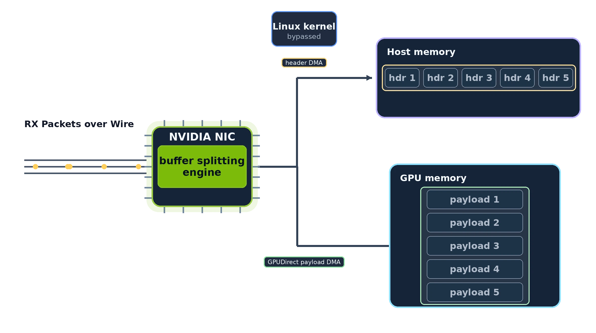
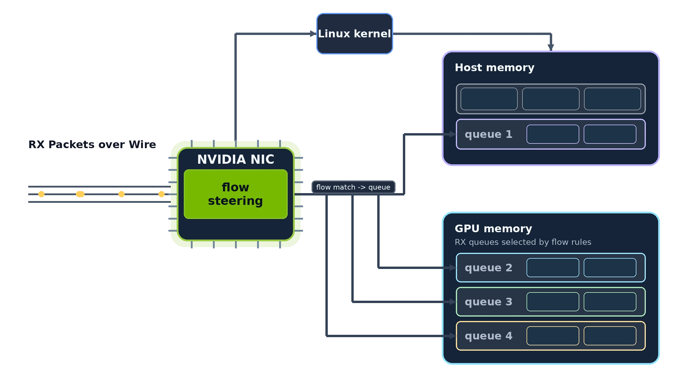
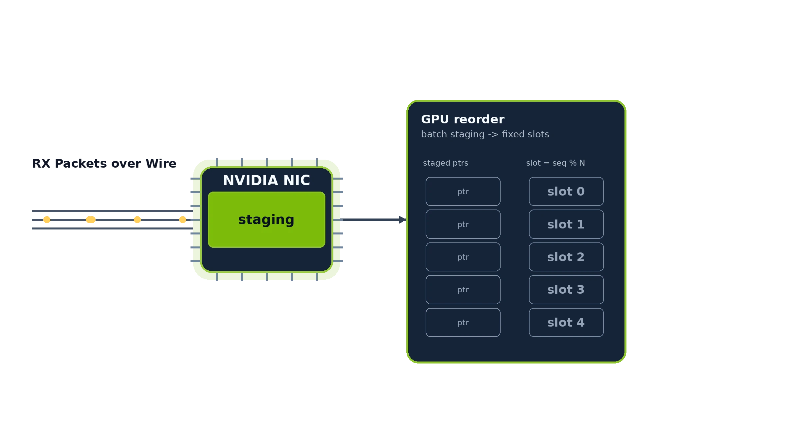

Concepts¶
This page is the DAQIRI glossary. It defines the terms used across the API Guide, Configuration Reference, and tutorials: stream types and endpoint URI schemes, GPUDirect, packet / burst / segment, flow / queue, memory region, zero-copy ownership, queue polling modes, and RX reorder.
Stream Types¶
DAQIRI exposes a single C++ API on top of several packet-I/O stacks. The choice is configured per-application in YAML with:
stream_type: the I/O stack family.- endpoint URI schemes:
tcp://,udp://, orroce://insocket_config.local_addrandsocket_config.remote_addr.
The shipped Ethernet stream types use NICs as their hardware endpoint. The planned PCIe programmable-sensor path uses the same DAQIRI model for devices that sit directly on the PCIe bus, such as FPGAs, frame grabbers, or custom acquisition cards.
Engines¶
An engine is the library that implements a stream type. It is a
separate concept from stream_type: the stream type says what kind of
stream you want, the engine is the implementation behind it.
You normally never set an engine, since DAQIRI picks a sensible default from
the stream_type and the endpoint URI scheme:
| Stream | Default engine | Notes |
|---|---|---|
stream_type: "raw" |
dpdk |
kernel-bypass raw Ethernet |
stream_type: "raw" with engine: "ibverbs" |
ibverbs (opt-in) |
MPRQ raw Ethernet via libibverbs/DevX (Mellanox/mlx5) |
stream_type: "socket" with udp:///tcp:// endpoints |
built-in Linux sockets | always available, nothing to build |
stream_type: "socket" with roce:// endpoints |
ibverbs |
RDMA/RoCE via libibverbs |
The engine concept exists so the implementation can be swapped without
changing the stream type. For example, raw Ethernet is served by the
dpdk engine by default but can instead use the ibverbs engine (a
Multi-Packet/striding Receive Queue implementation) by setting
engine: "ibverbs" on the stream. RoCE is served by the ibverbs engine,
and a future release could add a DOCA RDMA engine as an alternative for the
same roce:// stream.
At build time, DAQIRI_ENGINE selects which optional engines are
compiled in (dpdk, ibverbs); Linux sockets are always available. See
Getting Started for the build options.
Raw Ethernet¶
YAML: stream_type: "raw".
Kernel-bypass raw Ethernet. The application talks directly to NIC ring
buffers in user space, skipping the Linux network stack entirely. This
is the highest-performance path and the only one with hardware flow
steering (see Flows below). Implemented on top of
DPDK by default. The DPDK dependency is an
implementation detail, not a user-facing concept. Setting engine: "ibverbs"
on the stream instead uses a pure-libibverbs/DevX Multi-Packet (striding)
Receive Queue engine on Mellanox/mlx5 NICs, which packs many packets into one
pre-posted buffer to avoid per-packet allocation.
Requires an NVIDIA SmartNIC (ConnectX-6 Dx or later).
Socket¶
YAML: stream_type: "socket". The specific transport is chosen by endpoint
URI schemes:
udp:///tcp://: Linux kernel UDP and TCP sockets. No NIC privileges required, no special hardware. Useful as a comparison baseline against the kernel-bypass paths and as a way to get first results on a system without an NVIDIA NIC.roce://endpoints: RDMA over Converged Ethernet, using the open-sourcerdma-corelibrary. A server/client connection model, NIC-level reliable transport (RC), and in-order delivery. Primarily intended for workloads where one endpoint is a third-party device (an FPGA, an instrument, or another customer-supplied black box) that already speaks RoCE. When both peers run DAQIRI, prefer an upper-layer library such as MPI, NCCL, or UCX rather than wiring RoCE directly.
PCIe (future)¶
YAML: stream_type: "pcie".
Planned path for sensors that appear directly on the PCIe bus, such as FPGAs, frame grabbers, or custom acquisition cards. The goal is to move data into or out of CPU or NVIDIA GPU memory through the same DAQIRI C++/Python API while avoiding unnecessary copies. This stream type does not currently ship with a runnable benchmark or example YAML.
Choosing a stream type¶
The right choice depends on packet size, batch size, latency target, whether you need ordering or hardware reliability, and what the other end of the link looks like. DAQIRI's job is to make swapping among them a configuration change rather than a code change.
For a use-case-driven decision tree (baseline throughput, GPU reorder, header-data split, multi-queue flow steering, packet recording, RDMA, sockets), see Choosing an example config in the configuration walkthrough.
Support and testing
The DAQIRI library integration testing infrastructure is under active development. As such:
- Raw Ethernet (
stream_type: "raw") is supported, distributed with the DAQIRI library, and is the only stream type actively tested at this time. - Socket: UDP / TCP (
stream_type: "socket"withudp:///tcp://endpoints) is supported and distributed. Integration testing is under development. - Socket: RoCE (
stream_type: "socket"androce://endpoints) is supported and distributed. Integration testing is under development. - The PCIe programmable-sensor path is under development.
GPUDirect¶
GPUDirect allows the NIC to read and write data from/to a GPU without staging it through system memory first. That decreases CPU overhead and significantly reduces latency. An implementation of GPUDirect is supported by every DAQIRI stream type.
The two paths look like this:
flowchart LR
subgraph withGPUDirect [With GPUDirect]
nicA[NIC] -->|"PCIe peer-to-peer DMA"| gpuA[GPU memory]
end
subgraph withoutGPUDirect [Without GPUDirect]
nicB[NIC] -->|"DMA"| cpuB[CPU staging buffer] -->|"cudaMemcpy"| gpuB[GPU memory]
end
The GPUDirect path skips the CPU-side staging buffer and the
cudaMemcpy that goes with it.
Warning
GPUDirect is only supported on RTX GPUs and Data Center GPUs. It is not supported on GeForce cards.
How does that relate to peermem or dma-buf?
There are two kernel interfaces to enable GPUDirect:
- The
nvidia-peermemkernel module, distributed with the NVIDIA DKMS GPU drivers.- Supported on Ubuntu kernels 5.4+, deprecated starting with kernel 6.8.
- Supported on NVIDIA-optimized Linux kernels, including IGX OS and DGX OS.
- Supported by all MOFED drivers (requires rebuilding
nvidia-dkmsdrivers afterwards).
DMA Buf, supported on Linux kernels 5.12+ with NVIDIA open-source drivers 515+ and CUDA toolkit 11.7+.
The DPDK that ships in the DAQIRI container is patched with dma-buf
support, so the nvidia-peermem kernel module is not required
inside the container.
For step-by-step system setup, see the System Configuration tutorial.
Packets, Bursts, and Segments¶
DAQIRI is a batch processing library. Packets are received from DAQIRI and sent to DAQIRI in batches called bursts. Larger bursts can increase throughput at the expense of latency, while smaller bursts decrease latency but cap total throughput because of the per-burst processing overhead. The terms below appear throughout the API, configuration, and code paths.
Packet¶
A packet is a single, contiguous block of memory representing
either received data or data to transmit. Packets can be far larger
than an Ethernet MTU in some cases (for example with roce://, tcp://, or
udp:// endpoints); the underlying stack fragments and
reassembles them on the wire transparently.
Burst (BurstParams)¶
A burst is the metadata container DAQIRI uses to describe a batch
of packets being transmitted or received. The C++ type for a burst is
BurstParams. It is intentionally opaque, so applications use helper
functions (get_packet_ptr, get_packet_length, get_num_packets,
...) to inspect or modify it rather than touching its fields directly.
Segment¶
A segment is one contiguous memory region inside a packet. A packet can have one segment or multiple segments:
- Single segment: the whole packet fills one contiguous region.
- Multiple segments: each segment is assigned to a different memory region. The memory regions can be of any kind (CPU or GPU) in any order. A common use case is header-data split (HDS) below.
Header-Data Split (HDS)¶
Header-data split is the canonical multi-segment configuration: headers go to CPU memory (segment 0), payload goes to GPU memory (segment 1). This keeps the GPU payload path zero-copy for downstream GPU workloads while still letting the CPU parse and steer on the headers.
Use HDS when the application needs to inspect headers (UDP source/destination ports, application-layer sequence numbers, etc.) but the bulk of the data is meant for the GPU.

Flows and Queues¶
These two terms describe how packets are routed from the wire into the right application buffer.
Queue¶
A queue is a NIC-side buffer that an application reads from (RX) or writes to (TX). By default, each queue is assigned a CPU core in the YAML for DAQIRI to service. Queues and cores are not strictly one-to-one: one core can service multiple queues.
A queue points at one or more memory regions, which hold its packet buffers (CPU hugepages, GPU device memory, or pinned host memory).
Queue Polling Modes (poll_mode)¶
With packet processing there is an inverse relationship between bandwidth and latency. This is mainly for two reasons:
1) Batching packets allows more optimizations, but takes longer to wait 2) Larger packet sizes are more efficient for higher bandwidth, but take longer to transmit and receive
DAQIRI allows users to select whether to prefer higher bandwidth or lower latency on a per-queue basis. A typical use case for this would be high bandwidth for data plane, and low latency for control plane. Note that these are extreme definitions of high bandwidth and low latency. DAQIRI already provides extremely low latency and high bandwidth by bypassing the Linux kernel, regardless of the setting. Choosing low latency may save low single digit microseconds per packet.
The poll_mode setting is used by choosing either indirect for high bandwidth, or direct for low latency by choosing which thread polls the NIC. indirect mode is chosen by default to favor high bandwidth and batching.
| Mode | Who services the queue? | Best suited for |
|---|---|---|
indirect |
A DAQIRI worker running on the queue's configured cpu_core |
General use, batching, highest bandwidth |
direct |
The application thread calling the RX or TX API | The lowest single-packet latency when the application can dedicate one thread to each queue |
In indirect mode, the application and DAQIRI worker exchange bursts. The
queue requires cpu_core and batch_size; RX queues may also use timeout_us
to return a partial batch. indirect mode also allows more processing jitter in the application threads by using a zero-copy ring in between DAQIRI and the user. This is the existing behavior and is supported by
all applicable engines.
In direct mode, there is no worker between the application and the queue. The application thread performs the queue work as part of its normal API calls:
- Direct RX returns all packets currently ready, up to 256, without waiting.
An empty poll returns
Status::NOT_READY. - Direct TX accepts exactly one packet per
BurstParams. A successfulsend_tx_burst()means the packet was submitted; the application must not access that burst afterward. - Exactly one application thread must own each direct queue. A direct TX queue may have only one acquired-but-unsubmitted packet at a time.
Direct mode is available only for the raw ibverbs engine. A direct queue must
omit cpu_core, batch_size, and, for RX, timeout_us. Direct RX does not
support reorder configurations. Direct and indirect queues may be mixed on the
same interface.
Direct mode removes the cross-thread handoff that can add latency, but it also makes application scheduling part of packet I/O. If the application thread is descheduled, blocked, or busy doing other work, packet processing for that queue stops until it calls DAQIRI again. Use indirect mode when steady progress or batch throughput matters more than minimum latency.
See the RX queue and TX queue configuration references for the complete field rules.
Flow¶
A flow is a match pattern paired with one or more actions. The common RX action is to steer matching packets into one queue or a list of queues. For example, all UDP-destination-port-4096 packets can be routed into a queue backed by GPU memory. Matching and the resulting actions both run entirely in NIC hardware.
Flow rules are only available in Raw Ethernet (stream_type: "raw").
A flow's match can combine fields such as udp_src, udp_dst, and
ipv4_len; multiple flows can target the same queue, and the matching
flow's ID is available at runtime so the application can distinguish them.
Flows can be static or dynamic. Static flows are configured under
rx.flows in the YAML and keep their configured IDs for the process lifetime.
Dynamic RX flows are added after daqiri_init() with add_rx_flow_async() or
add_rx_flows_async(); their non-zero FlowIds are allocated by DAQIRI,
returned in the add completion, and used as the packet marks returned by
get_packet_flow_id(). Batch adds complete with a single operation result whose
flow IDs are in input order. Only dynamic flows can be deleted dynamically. TX
dynamic flows are not part of v1.
Raw DPDK and raw ibverbs flows can also use ordered actions: for hardware VLAN
pop/push and VXLAN, GRE, or NVGRE decap/encap. RX decap/pop actions deliver
post-decap packets to application buffers, while TX encap/push actions leave
application buffers as pre-encap packets and change only the wire frame.
Dynamic RX flows use the same ordered action model for runtime decap/pop rules,
while TX transform flows remain static startup configuration.
A queue action with two or more queue IDs enables receive-side scaling (RSS). The NIC computes a Toeplitz hash from the IPv4/UDP five tuple and uses it to select one requested queue. This is flow-affine: every packet in an unchanged flow stays on one queue, preserving per-flow ordering. RSS is not packet striping, so roughly even queue packet counts require enough distinct tuples with reasonably balanced traffic. Tunnel-decap rules hash the inner tuple; flex-item rules still hash the IPv4/UDP tuple rather than the flex value. eCPRI flows do not support multi-queue RSS.
Flow Steering¶
Flow steering is the NIC-level mechanism that classifies an incoming packet against the configured flows and writes it into a selected queue's buffer, entirely in hardware. Multi-queue RX can use separate scalar rules or one RSS rule for parallel processing.
For Raw Ethernet, flow steering is implemented on top of RTE Flow in the
DPDK engine and mlx5 Direct Rules in the ibverbs engine. Flow rules are
programmed during daqiri_init(); initialization fails if the NIC
rejects a rule. The YAML options are documented in
Configuration YAML Reference → Flows.

Memory Regions¶
A memory region is a named pool of buffers where packet data lives. Memory regions are declared at the top of the YAML and referenced by name from each queue.
The kind of a memory region determines whether packet data ends up on the CPU or the GPU:
huge: CPU hugepages (recommended for CPU buffers).device: GPU VRAM (discrete GPUs, requires GPUDirect via peermem or DMA-BUF).host_pinned: pinned CPU pages allocated viacudaHostAlloc. Recommended on integrated GPUs (NVIDIA GB10 / DGX Spark), where the NIC cannot peer-DMA into device memory.host: regular CPU memory (not recommended for hot paths).
The size of the memory region (buf_size) dictates the largest
contiguous chunk that can be stored in a single segment. For example,
with a 60-byte region the first 60 bytes of each packet land in that
segment before the remainder spills into the next region in the
queue's list. Region buffers can be much larger than a single Ethernet
frame for fragmented transports (for example, roce://).
Combining memory regions on a single queue is how header-data split
is expressed in the YAML: queue 0's first memory region is a huge CPU
pool (for headers, segment 0); its second region is a device GPU pool
(for payload, segment 1).
Zero-Copy Ownership¶
DAQIRI is designed around zero-copy packet delivery. When a receive API returns packet data, the application is reading the buffers the NIC DMA'd into. The API passes pointers and metadata, not copies.
That zero-copy model makes buffer release part of the API contract.
Applications must free RX bursts after processing and free or send TX
bursts after allocation. Holding bursts indefinitely drains DAQIRI's
buffer pools and can lead to NO_FREE_BURST_BUFFERS,
NO_FREE_PACKET_BUFFERS, queue drops, or stalled TX.
When to call each free_* function is documented in the
C++ API Usage page.
RX Packet Aggregation and Reorder¶
DAQIRI can perform GPU- or CPU-side packet aggregation and reordering
on RX through rx.reorder_configs:
- GPU reorder configs copy selected packet payloads into a configured output memory region and deliver the result as one reordered aggregate burst.
- CPU reorder configs provide the same aggregate-burst model for CPU-addressable packet and output memory.
This is the path to use when packets arrive out of order (e.g. across multiple NIC queues) and need to be reassembled into a single, contiguous GPU buffer before downstream processing.

Each reorder config currently operates on a single memory domain, either GPU-only or CPU-only. Reordering packets whose segments span two memory regions (for example, an HDS pair with CPU-side headers and GPU-side payloads) is not yet supported but is planned.
See Configuration YAML Reference → RX Reorder Configs for the configuration constraints and C++ API Usage → Reordered RX bursts for how to consume them from C++.
See also¶
- API Guide: the 6-step DAQIRI application lifecycle, with links into the language API.
- Configuration YAML Reference: every YAML key, its type, and its valid values.
- C++ API Usage: initialization, RX/TX, file writes, utilities, and the C++ function reference.
- System Configuration tutorial: the hardware and OS setup the concepts above depend on.